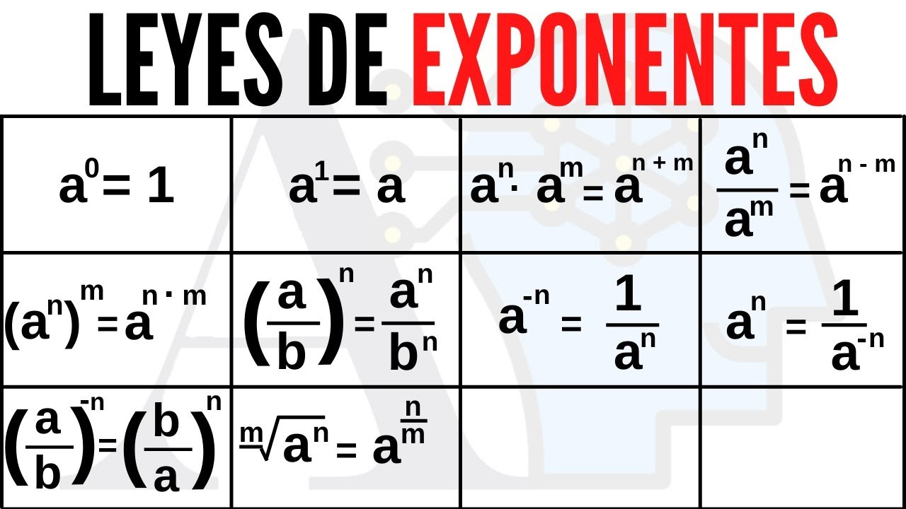

PRECALCULO
tema 1
EXPONENTES Y RADICALES
EXPONENTES
Los exponentes de números enteros positivos nos sirven para multiplicar varias veces un numero asi mismo , por ejemplo: queremos multiplicar varias veces el 5 por si mismo entonses ponemos 5^n.
Los exponentes de números enteros Negativos nos sirven para multiplicar varias veces un numero asi mismo , pero estos se pasan al denominador ejemplo 5^-1 = 1/5 a esto ultimo también se le llama inverso multiplicativo.
RADICALES
Ya comprendemos que es un exponente pero ahora que pasa si hablamos de un exponente que es una fracción algo así 2^m/n (la n indica la raíz mientras que m indica la exponencial de la raíz), en este caso estamos ablando de un radical y lo cual lo vuelve una raíz por ejemplo 2^1/2 seria raíz cuadrada de 2.
okey entonses ahora si decimos 9^1/2 sera igual a 3 por lo que lo inverso ala respuesta seria 3^2 si fuera 1/3 seria elevar la respuesta a 3 y así la raíz disminuye el doble del numero por lo que la raiz de 9 va hacer 3.

tema 2
Ecuaciones
que es una ecuación imagina que tenemos 5 + 5 = 10 bueno sabemos que si sumamos el 5 + otro 5 dará 10 pero que pasa cuando no tenemos uno de esos términos ósea no conocemos un valor si es el de la igualdad solo operamos pero y si es el segundo termino ósea 5 + ? = 10 en este caso hay que encontrar la incognita.
la incógnita se representara con una X y que es lo que haremos entonses seguir la propiedad de la igualdad que nos dice que si un numero esta sumando pasa a restar al otro lado para encontrar la respuesta dela incógnita eso sirve también si estamos diciendo X - 5 = 7 lo que debemos de hacer es sumar 5 al otro lado lo que nos daría 12 y si restamos 12 - 5 nos da 7.
ahora que pasa si tenemos un numero multiplicando ejemplo 2X = 8 bueno fácil pasamos a dividirlo 8/2 lo mismo si estamos dividiendo solo que pasa a multiplicar.
tema 3
funciones
Las funciones en matemáticas son relaciones entre dos conjuntos de elementos, en las cuales a cada elemento del conjunto de partida (llamado dominio) le corresponde un único elemento en el conjunto de llegada (llamado codominio).
las funciones nos sirven para analizar datos y crear graficas que muestran sus comportamientos, para graficar una función se le debe de encontrar barios dominios para poderla graficar.